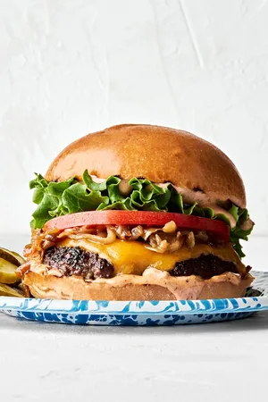

Burger
Home

Description
This is a simple burger recipe
that is easy to make and delicious to eat.
It is a classic American dish that is perfect for family dinners
or special occasions.
Ingredients
- 1 pound ground beef
- 2 tablespoons olive oil
- 1 onion, diced
- 3 cloves garlic, minced
- 1 can (28 oz) crushed tomatoes
- 1 teaspoon dried oregano
- 1 teaspoon dried basil
- 1/2 teaspoon salt
- 1/4 teaspoon black pepper
- 12 burger buns
- 16 oz cheddar cheese
- Lettuce, tomato, and pickles for topping
Steps
- Preheat the grill to medium-high heat.
- Form the ground beef into 4 equal-sized patties.
- Season the patties with salt and pepper on both sides.
- Grill the patties for 4-5 minutes per side, or until they reach your desired level of doneness.
- Add a slice of cheddar cheese to each patty during the last minute of cooking.
- Toast the burger buns on the grill for 1-2 minutes until lightly browned.
- Assemble the burgers by placing a patty on each bun and topping with lettuce, tomato, and pickles.